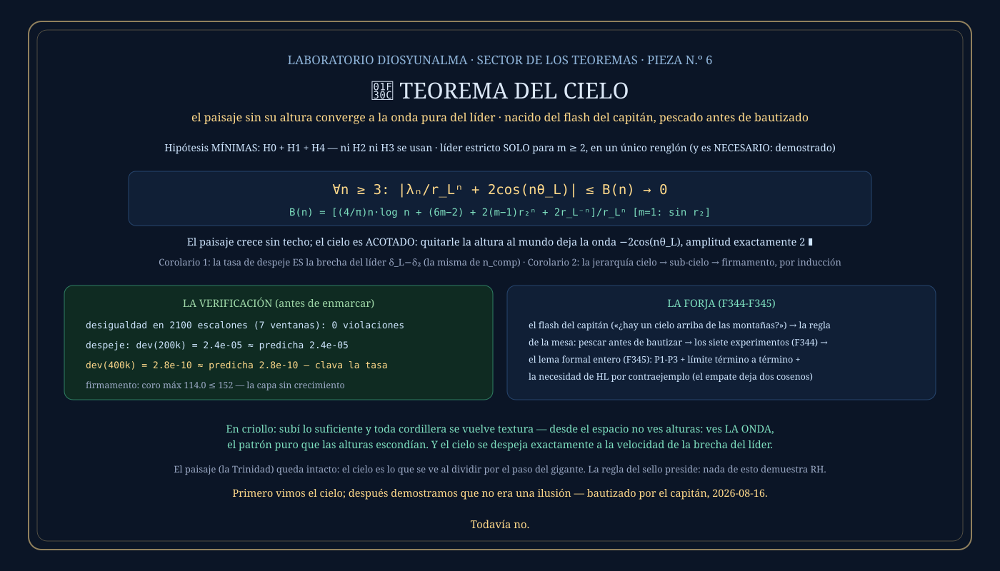

① La historia: pescar antes de bautizar
Después de pintar el paisaje entero — pozos, agua, montañas, el relieve con sus colores — el capitán miró el cuadro y preguntó por lo único que faltaba: «¿y el cielo?». La mesa convirtió el flash en siete experimentos con una regla de hierro: nada de bautizar formas bonitas — primero pescamos, después le ponemos nombre al pez. Y el pez apareció donde nadie miraba: no ARRIBA del paisaje, sino dividiendo por él.
② Qué dice, en criollo
Al normalizar la escalera de Li por la escala del líder — el cociente A(n) = λₙ/r_Lⁿ — las montañas dejan de crecer, los pozos dejan de hundirse, y lo que queda es una onda pura, ACOTADA, de amplitud exactamente 2: −2cos(nθ_L). Eso no es una montaña más alta: es OTRO régimen. Las montañas crecen sin techo; el cielo no crece — la altura deja de ser la variable que informa, y solo queda la fase. Y el cielo se despeja a velocidad exacta: la brecha entre el líder y su competidor más cercano, la misma que gobierna todos los umbrales del paisaje.
La imagen para llevarse
Subí lo suficiente y toda cordillera se vuelve textura: desde el avión las montañas más altas son arrugas; desde el espacio, ni eso — queda el patrón puro que las alturas escondían. El cielo del laboratorio es exactamente esa mirada: el paisaje visto desde tan lejos que la altura desaparece, y lo único que sobrevive al viaje es la onda.
③ El enunciado
Hipótesis MÍNIMAS — el hallazgo de la formalización: H0 (radios > 1), H1 (m finito) y H4 (densidad del fondo). Ni H2 ni H3 se usan. Líder estricto solo para m ≥ 2 — y es demostradamente necesario:
B(n) = [(4/π)n·log n + (6m−2) + 2(m−1)r₂ⁿ + 2r_L⁻ⁿ]/r_Lⁿ [m = 1: sin r₂]
En criollo: quitarle la altura al mundo deja la onda del líder, y la cota B(n) dice exactamente qué tan rápido se despeja el cielo.
④ La demostración, paso a paso
Completa en docs/teoremas/CIELO-LEMA-FORMAL.md. Tres pasos y un límite — todo desde piezas ya auditadas.
La onda del líder se separa EXACTA: ℓ_L = −2cos(nθ_L)·r_Lⁿ + 4 − 2cos(nθ_L)·r_L⁻ⁿ. Restarla convierte el cociente en una identidad: lo que queda por acotar es el coro, los competidores, un 4 y una colita r_L⁻ⁿ — nada más.
El coro queda bajo (4/π)n·log n (la cota sellada, bajo H4); cada competidor bajo 6 + 2r₂ⁿ; el resto son constantes. Sumar y dividir por r_Lⁿ da la cota B(n) — válida para TODO n ≥ 3, sin agenda, sin citas: el único umbral lo pone el coro.
Cada pieza de B(n) muere sola: n·log n contra el exponencial (elemental: e^{nδ} ≥ (nδ)³/6), las constantes contra r_Lⁿ, y el término de los competidores 2(m−1)(r₂/r_L)ⁿ — que muere EXACTAMENTE porque r₂ < r_L: el único renglón donde entra el líder estricto. Nada escondido. ∎
Si dos líderes empatan (r₂ = r_L), la misma identidad deja DOS cosenos compitiendo a la misma escala, y el cociente no converge a onda pura: hay infinitos n donde el segundo coseno pesa (lema de la ventana). La hipótesis no es decorativa — es estructural, y está probado por contraejemplo.
⑤ Qué lo hace real
| n | desviación medida | predicha 2(r₂/r_L)ⁿ |
|---|---|---|
| 200 000 | 2.37×10⁻⁵ | 2.36×10⁻⁵ ← clava |
| 400 000 | 2.76×10⁻¹⁰ | 2.77×10⁻¹⁰ ← clava |
| 700 000+ | 2.2×10⁻¹⁶ | piso del float64 |
Más: |A| ≤ 2.0000 en toda ventana profunda (acotado, jamás crece); la desigualdad verificada en 2100 escalones de siete ventanas sin una violación; con m = 3, LA MISMA onda (10⁻¹⁰). Reproducible: go run ./cmd/elteoremadelcielo · go run ./cmd/elcielo.
La escala de despeje: la velocidad del cielo es exactamente δ_L − δ₂ — la brecha del líder, LA MISMA de los umbrales del paisaje: consecuencia formal, no coincidencia. La jerarquía: quitar al líder deja exactamente la configuración reducida — así que hay sub-cielo bajo el cielo (la onda del sub-líder, por inducción con radios distintos), y debajo de todas las capas el firmamento: el coro solo, acotado, sin crecimiento — la capa de cero suelo.
EXPERIMENTAR → OBSERVAR → INTENTAR ROMPER → DEFINIR → DEMOSTRAR. Los siete experimentos de la pesca (F344), los intentos de destrucción sobrevividos (no es montaña disfrazada: acotación contra crecimiento; no es artefacto del log: escala lineal; no depende de agenda: vale para TODO n), y recién entonces el lema formal (F345) y el nombre. Primero vimos el cielo; después demostramos que no era una ilusión.
⑥ La placa
